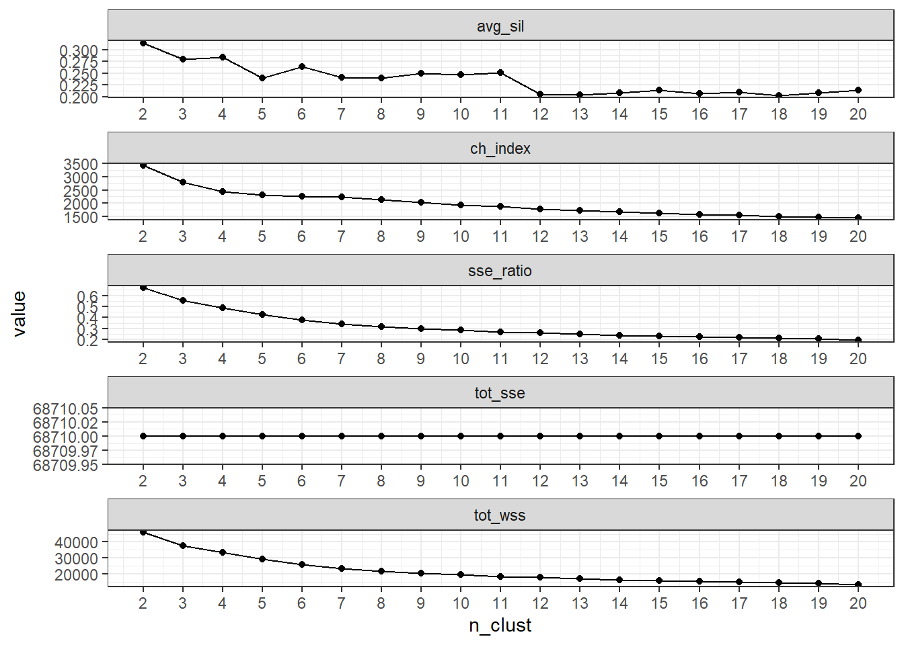

library(workflows)
library(parsnip)
library(tidyverse)
library(tidymodels)
library(glue)
library(tidyclust)
library(factoextra) # trying fviz_nbclust(), which gives elbow, silhouette, and gap statistic
library(hopkins)
library(fpc)
d <- read_csv("./data/clean_mu_weighted_soil_props.csv") %>%
select(-contains("comp_pct"))
old_names <- colnames(d)
new_names <- str_replace_all(old_names, "_r_value", "")
colnames(d) <- new_names10 Implement k-means
10.1 Overview
In this section, I will use the cleaned dataset created in the last chapter to build a k-means pipeline that runs a model for a range of different cluster sizes (k).
After fitting the models, I review some common metrics for determining best cluster sizes, and save the model objects for further investigation in the next chapter.
10.2 Setup
Reminder of what the data look like:
head(d)Reminder of the transformations I chose to improve variable distributions and make them normal-ish.
- Square root: clay, carbonates
- Log10: organic matter, cec, lep, ksat, awc
- Cube (^3): bulk density
- None: ec, ph
10.3 Pre-process data (recipe)
This is something specific to the tidymodels modeling workflow, and I like it because it’s very explicit about how variables are transformed (pre-processed) prior to initializing the model.
Here I apply some transformations to achieve more normal distributions, and then standardize (step_normalize) by subtracting the mean and dividing by 1 sd.
rec_spec <- recipe(~., data = d) %>%
update_role(mukey, new_role = "ID") %>%
# note this is log10 (the default is ln)
step_log(om, cec7, ksat, awc, lep, base = 10) %>%
step_mutate(dbthirdbar = dbthirdbar^3) %>%
step_sqrt(claytotal, caco3) %>%
step_normalize(all_numeric_predictors())
rec_specRecipe
Inputs:
role #variables
ID 1
predictor 10
Operations:
Log transformation on om, cec7, ksat, awc, lep
Variable mutation for dbthirdbar^3
Square root transformation on claytotal, caco3
Centering and scaling for all_numeric_predictors()10.3.1 Check that it worked
Although I did make plots of the data distributions after transforming in Chapter 7 , I wanted to do it again here as a check that the pre-processing that I am specifying is working as intended. Here, I do that with two functions from {recipes} :
prep()estimates a pre-processing recipe. It takes my input dataset (“training set”) , and estimates the parameters (model inputs), reporting back on the specific operations and missing databake()to return the training data (because I setnew_datato NULL)
# retain argument here tells prep to keep
# the pre-processed training data
# note this can make the final recipe size large,
# so this is not the recipe object I probably want to use
# in my list col below
check_prep <- prep(rec_spec, retain=TRUE)
# using NULL here for new_data b/c I want the
# pre-processed training data
check_prepped_df <- bake(check_prep, new_data = NULL)
head(check_prepped_df)# save the pre-processed data for making a
# correlation matrix
write_csv(check_prepped_df, "./data/data_preprocessed_all_var.csv")OK, now making a plot of the transformed variables to take a look at their distributions:
check_prepped_df %>%
select(-mukey) %>%
pivot_longer(cols = everything(), names_to = "var", values_to = "value") %>%
ggplot(aes(x = value)) +
geom_histogram(bins =25) +
facet_wrap(vars(var), scales = "free") +
theme_bw() +
ggtitle("Distributions of transformed and standardized vars")10.4 Set model options
Do I need to think about the initializer here? Based on what I was reading in the book chapter by Tan et al., 2018 (“Cluster Analysis: Basic Concepts and Algorithms”), it sounds like using kmeans++ for the initialization could results in better clustering (lower SSE). See page 543. See also this paper referenced in the clusterR documentation about seeding (initialization).
stats::kmeans() the default seems to be Hartigan-Wong method, which uses random partition for the initialization. From the {tidyclust} documentation:
The observations are assigned to a cluster uniformly at random. The centroid of each cluster is computed, and these are used as the initial centers.
I guess the other benefit of the Hartigan-Wong method is that it results in more consistent human-verified clusters (again, per tidyclust documentation listed above). Could read this blog post for a deeper dive into these methods if needed.
ClusterR::KMeans_rcpp() uses the Lloyd/Forgy method (per the tidyclust docs, this info wasn’t easy to find in the ClusterR docs)
For now I’m going with stats::kmeans, and setting the nstart to 10. Because the random initial configuration (random starting centroids) can have an impact on the final clusters, it sounds like it’s a good idea to do multiple starts, and then let kmeans return the best one (using lowest within cluster SSE as the metric for “best”)
# writing a custom function here so I can be explicit
# about the options I'm choosing, and also use within the
# list-col framework I set up with map() below.
km_spec <- function(nclust){
tidyclust::k_means(num_clusters = nclust) %>%
parsnip::set_engine(engine = "stats",
nstart = 10, # 1 is default, >1 recommended
algorithm = "Hartigan-Wong", # H-W is default
iter.max = 20) # default is 10, wasn't always enough
}10.5 Set up data structure
Here I set up a dataframe that will catch my modeling results in list columns of the different model objects and return values. The first column I define specifies the range of different cluster sizes (k) that we will try.
try_clusts <- c(2:20)
km_df <- data.frame(n_clust = try_clusts)10.6 Specify model (for each value of k)
For each unique value of k (2-20), this returns a model specification object (in the kmeans_spec column) based on the custom function I wrote above. The model specification has all the options set about how we want the algorithm to run (methods, number of starts, etc.). We need a different one for each value of k.
The kmeans_wflow column here holds our workflow objects. These objects combine our model specification (from kmeans_spec) with the data recipe (preprocessor) we made above (rec_spec, is same for all models).
# for each unique value of clusters (2:20), returns a model
# specification (kmeans_spec) and a workflow (kmeans_wflow)
# note that the workflow
km_df <- km_df %>%
mutate(
kmeans_spec = map(n_clust, ~ km_spec(nclust = .x)),
kmeans_wflow = map(kmeans_spec,
~ workflow(
preprocessor = rec_spec, spec = .x
))
)
# our current data structure
head(km_df, n=3L )# take a look at an example workflow
km_df$kmeans_wflow[3][[1]]
══ Workflow ════════════════════════════════════════════════════════════════════
Preprocessor: Recipe
Model: k_means()
── Preprocessor ────────────────────────────────────────────────────────────────
4 Recipe Steps
• step_log()
• step_mutate()
• step_sqrt()
• step_normalize()
── Model ───────────────────────────────────────────────────────────────────────
K Means Cluster Specification (partition)
Main Arguments:
num_clusters = nclust
Engine-Specific Arguments:
nstart = 10
algorithm = Hartigan-Wong
iter.max = 20
Computational engine: stats 10.7 Fit the models
All the steps above were related to specifying different aspects of this model. Now we can actually fit the models.
Some troubleshooting here:
- Started by specifying
tidyclust::fit()but something weird was happening where mystep_normalize()wasn’t included in the pre-processor recipe when I looked at the fitted model object. - If I specify
parsnip::fit(), thenstep_normalize()is included and the values of the cluster centroids are in the expected ranges (centered, scaled). - I also tried this without explicitly specifying the package (so just
fit()) and it worked as expected.
# make a quiet version of fit(), so we can capture results
# and any warning messages from the models
# see troubleshooting notes below
quiet_fit <- purrr::quietly(.f = parsnip::fit)
set.seed(4) # for reproducibility
km_fit_df <- km_df %>%
mutate(km_result = map(.x = kmeans_wflow,
.f = quiet_fit,
# data comes after .f b/c not vectorized over
data = d),
km_fit = map(km_result, ~pluck(.x, 'result')),
warn = map(km_fit, ~pluck(.x, 'warnings')),
msg = map(km_fit, ~pluck(.x, 'messages')),
n_iter = map_dbl(km_fit,
~pluck(.x, 'fit', 'fit', 'fit', 'iter' )))
# check out current data structure
head(km_fit_df, n = 3L)# don't need anymore, cleaning up
rm(km_df)10.7.1 Notes about model fit troubleshooting
If I set.seed(123) and run kmeans with max.iter=10, get warnings about ‘no convergence at 10 iterations’, for k = 17 and k = 20. Changed to max.iter=20 and ran again, this time no convergence warnings.
As a result of this experience, I added some additional columns to the km_fit_df object using {purrr} ’s function quietly() so I could capture warnings and messages that would otherwise only appear in the console (and are hard to trace when I’m iterating through all these models at once). This blog post was very helpful for an example of how to do this.
In an earlier troubleshooting attempt, I was trying to see if the warning messages were stored anywhere in the fitted {tidyclust} model object? It seemed like maybe they would have been in ifault, but those values were all 0, even when I had model convergence warnings. In that case I tried indexing into the fitted model objects with map(km_fit, ~pluck(.x, 'result', 'fit', 'fit', 'fit', 'ifault' ))
10.7.2 View messages & warnings
We can look at any warnings or messages from the modeling process:
km_fit_df %>%
select(n_clust, warn, msg, n_iter)10.7.3 Look at one fit object
As an example, these are what the fitted objects look like.
NOTE the clustering vector here is using the cluster numbers directly from kmeans(). tidyclust assigns names like “Cluster_1”, “Cluster_2” etc. , but the numbers do NOT necessarily match with what kmeans() returns. The CLUSTERINGS are the same, but the numbers are not necessarily so. So 2 in this “Clustering Vector” below is NOT necessarily equal to tidyclust “Cluster_2” that you might get by using the extract_cluster_assignment function. To keep things consistent, I’m always using the cluster names assigned by tidyclust.
examp_fit <- km_fit_df$km_result[[4]][['result']]
examp_fit══ Workflow [trained] ══════════════════════════════════════════════════════════
Preprocessor: Recipe
Model: k_means()
── Preprocessor ────────────────────────────────────────────────────────────────
4 Recipe Steps
• step_log()
• step_mutate()
• step_sqrt()
• step_normalize()
── Model ───────────────────────────────────────────────────────────────────────
K-means clustering with 5 clusters of sizes 479, 2019, 1832, 1065, 1477
Cluster means:
claytotal om cec7 dbthirdbar ec ph1to1h2o caco3
1 0.5174494 0.3745308 0.3208957 -0.6376723 3.3283137 1.1660203 1.0228662
2 -0.3814723 -0.3465904 -0.2722727 0.3236714 -0.2571456 -0.5186223 -0.5279703
3 0.7722551 0.6366879 0.8147342 -0.5735785 -0.2463628 -0.2631583 -0.5750294
4 -1.5118222 -1.1990889 -1.6374004 1.0687407 -0.2271428 -0.7273531 -0.5026188
5 0.4858861 0.4272060 0.4382179 -0.2948278 -0.2585251 1.1816599 1.4656479
lep ksat awc
1 0.4284214 -0.5251382 0.2167607
2 -0.4841584 0.2713584 0.0553920
3 0.6939805 -0.7350181 0.5806865
4 -0.9544845 1.5123302 -1.7551062
5 0.3503424 -0.3794245 0.3992591
Clustering vector:
[1] 4 4 4 2 2 4 4 4 4 4 2 4 4 2 4 3 2 2 4 4 2 2 4 4 2 4 4 4 4 4 2 2 4 4 4 4 4
[38] 2 2 2 4 4 4 4 4 2 4 4 4 4 4 2 2 2 3 5 5 2 3 3 3 3 3 1 4 4 4 4 5 5 3 3 4 4
[75] 5 4 5 3 2 2 3 3 3 1 5 4 4 4 4 4 4 4 3 4 4 5 2 4 4 4 3 3 5 5 5 5 4 4 2 2 2
[112] 4 4 4 3 5 4 4 4 4 5 3 3 3 3 4 4 4 4 2 2 4 2 4 4 2 4 2 5 2 4 4 4 4 4 4 5 4
[149] 4 4 5 2 2 3 1 2 1 4 2 2 2 4 5 5 5 5 2 2 4 4 4 2 2 4 4 2 2 5 5 5 2 3 2 2 3
[186] 5 5 3 3 3 2 2 5 3 3 2 2 2 4 4 4 4 4 4 4 2 3 3 3 3 3 3 3 3 3 3 3 3 3 5 3 5
[223] 5 3 4 4 3 3 3 5 4 4 4 3 3 4 5 2 3 3 4 2 5 5 2 3 4 3 3 1 4 4 4 2 1 2 4 4 5
[260] 4 5 4 4 4 4 2 4 4 2 4 4 4 4 4 4 4 4 2 2 2 2 4 4 2 2 4 4 4 2 4 4 4 4 2 2 2
[297] 2 2 4 4 4 4 2 4 2 4 4 2 2 2 2 2 4 4 4 4 4 4 4 4 4 4 4 4 4 4 4 2 4 4 4 4 4
[334] 2 2 2 1 3 5 5 1 1 1 1 5 1 5 5 3 3 5 5 3 1 5 1 3 5 5 1 2 5 3 5 5 2 1 5 5 3
[371] 2 2 3 2 2 3 3 1 2 3 4 4 5 5 3 3 3 3 3 3 3 3 3 3 3 3 3 5 3 5 5 3 3 3 5 5 5
[408] 5 5 3 2 2 3 3 3 3 2 2 2 2 3 3 3 2 2 5 5 5 3 2 3 2 2 2 3 3 3 4 4 4 3 3 4 2
[445] 2 3 3 3 3 3 5 3 3 3 3 5 4 3 4 4 2 3 3 3 3 2 3 3 3 5 5 3 3 3 3 3 5 3 3 3 3
[482] 5 3 2 2 2 5 2 2 3 3 2 3 3 3 5 2 3 3 3 5 3 3 5 5 5 3 3 3 5 3 3 3 3 3 3 3 5
[519] 2 2 5 5 5 3 3 3 3 3 4 4 2 2 3 3 3 2 2 3 3 2 2 5 3 2 5 5 2 4 2 5 5 1 2 4 2
[556] 2 5 2 5 3 5 5 5 5 2 2 5 5 5 5 5 3 5 2 5 2 3 3 5 2 5 5 5 3 5 3 5 5 5 2 2 2
[593] 3 3 5 5 5 3 3 5 2 4 5 3 3 2 3 3 5 3 4 2 2 3 5 2 5 2 3 3 3 3 3 3 5 5 5 5 5
[630] 2 3 3 3 3 2 2 2 2 3 2 2 2 5 3 3 3 2 2 2 2 3 3 3 3 2 5 5 5 4 4 4 4 2 2 2 2
[667] 3 5 2 2 2 2 2 2 2 2 2 2 3 2 2 2 4 3 3 3 3 3 3 3 3 3 4 4 4 4 4 4 2 2 2 2 4
[704] 4 2 4 4 4 4 4 4 4 4 4 4 4 4 2 4 4 4 4 4 4 4 4 2 4 4 4 5 3 2 4 4 2 4 4 2 4
[741] 4 4 4 4 2 4 4 2 4 4 5 5 5 5 5 2 5 2 2 4 5 3 2 3 2 5 3 5 5 3 2 3 3 2 3 3 5
[778] 5 1 5 5 5 5 5 5 2 2 2 2 5 3 3 5 3 3 2 3 5 3 3 5 5 5 5 5 5 5 5 2 3 5 5 5 5
[815] 3 5 5 5 5 5 5 5 5 2 2 2 3 3 2 2 3 3 3 5 3 3 5 5 2 2 2 2 2 4 5 5 5 3 1 3 3
[852] 3 1 5 5 1 5 1 1 1 1 1 1 1 1 1 2 1 1 1 1 1 1 2 4 4 1 3 1 1 4 4 4 1 2 2 4 2
[889] 2 5 1 3 3 5 3 5 3 5 1 5 5 3 3 1 4 1 2 5 5 1 3 4 5 5 5 5 5 1 1 1 2 1 1 2 1
[926] 1 1 1 1 1 3 2 2 3 4 2 1 1 1 3 3 5 3 4 4 4 4 3 3 1 5 5 1 1 1 4 4 5 4 4 2 2
[963] 2 3 5 3 5 4 4 4 3 3 5 5 2 2 4 4 5 2 3 4 2 4 4 4 2 5 5 2 4 4 4 4 3 3 3 1 4
[1000] 4 2 3 1 2 1 2 4 5 4 4 4 4 4 5 2 2 5 5 2 2 2 2 5 3 3 3 5 5 5 2 5 2 2 3 5 5
[1037] 5 5 3 3 5 3 5 5 5 2 2 5 3 3 5 3 4 4 5 3 3 3 3 3 3 3 5 3 2 5 5 3 3 3 5 2 2
[1074] 5 3 3 2 3 5 3 3 5 5 5 2 2 5 5 5 5 3 3 3 3 3 3 3 3 5 5 5 3 5 5 3 3 5 5 5 2
[1111] 2 2 3 2 3 3 5 5 5 3 3 5 3 3 3 4 5 3 3 3 4 4 4 4 4 5 4 2 4 4 4 4 4 4 4 4 4
[1148] 4 4 4 3 4 4 4 4 2 4 4 4 2 3 2 4 4 4 4 4 4 4 4 3 2 5 2 4 3 2 3 2 2 4 4 4 4
[1185] 4 4 4 2 2 2 2 2 4 2 4 4 4 3 3 2 2 2 2 2 2 4 4 4 3 3 4 4 4 2 2 3 3 3 3 2 2
...
and 162 more lines.A nicer way to look at the results is by accessing specific parts of the fitted model object, as below.
# some basic model metrics
glance(examp_fit)# centroid data (transformed/standardized scale)
centroids <- tidyclust::extract_centroids(examp_fit)
centroids# helpful to add to future plots for examining indiv. clusters
clust_stat <- tidyclust::sse_within(examp_fit)
clust_stat10.8 Model metrics
See also section 7.5 in the Chapter by Tan et al. for more about cluster evaluation.
10.8.1 Extract metrics
metrics_df <- km_fit_df %>%
mutate(
# tot_sse = total sum of squared error
tot_sse = map_dbl(km_fit, ~ sse_total_vec(.x)),
# tot_wss = sum of within-cluster sse
tot_wss = map_dbl(km_fit, ~sse_within_total_vec(.x)),
# sse ratio = wss / total sse,
sse_ratio = map_dbl(km_fit, ~sse_ratio_vec(.x))
)
rm(km_fit_df)
metrics_simple <- metrics_df %>%
select(n_clust, tot_sse, tot_wss, sse_ratio)
metrics_simple10.8.2 Plot Total WSS
Not a clear “elbow” here, although by the time we get to 10-11 it does seem to be leveling off.
metrics_simple %>%
ggplot(aes(x = n_clust, y = tot_wss)) +
geom_point() +
geom_line() +
theme_bw() +
scale_x_continuous(breaks = c(1:20)) +
xlab("k (number clusters)") +
ylab("sum of within-cluster sse") +
ggtitle("Compare values of k: looking for elbow")metrics_simple %>%
filter(n_clust %in% c(2:12)) %>%
ggplot(aes(x = n_clust, y = tot_wss)) +
geom_point() +
geom_line() +
theme_bw() +
scale_x_continuous(breaks = c(1:12)) +
xlab("k (number clusters)") +
ylab("sum of within-cluster sse") +
ggtitle("Zoom in a bit: looking for elbow")10.8.3 Average Silhouette
From the {tidyclust} documentation:
Another common measure of cluster structure is called the silhouette. The silhouette of a single observation is proportional to the average distance from that observation to within-cluster observations minus the average distance to outside-cluster observations; normalized by the greater of these two average.
In principle, a large silhouette (close to 1) suggests that an observation is more similar to those within its cluster than those outside its cluster.
See also pg. 581 in Tan2018 Chap 7 Cluster Analysis: Basic Concepts and Algorithms
prepped_rec <- prep(rec_spec, retain=TRUE)
# using NULL here for new_data b/c I want the
# pre-processed training data
baked_df <- bake(prepped_rec, new_data = NULL) %>%
select(-mukey)
dists <- baked_df %>% as.matrix() %>% dist(method = "euclidean")
silh_df <- metrics_df %>%
mutate(avg_sil = map_dbl(km_fit,
tidyclust::silhouette_avg_vec,
dists = dists),
indiv_sil = map(km_fit,
tidyclust::silhouette,
dists = dists))
indiv_sil_df <- silh_df %>% select(n_clust, indiv_sil) %>%
unnest(indiv_sil) %>%
mutate(across(.cols = c(cluster, neighbor),
.fns = as.character))
write_csv(indiv_sil_df, "data/kmeans_points_silhouettes.csv")
rm(metrics_df)
rm(dists)
rm(prepped_rec)Higher silhouette is better (means observations are closer to their centroids than to other observations). Seems to suggest that 4, 6, 10-12 would be OK (those are local maxima), but not greater than 12.
silh_df %>%
ggplot(aes(x = n_clust, y = avg_sil)) +
geom_point() +
geom_line() +
theme_bw() +
scale_x_continuous(breaks = c(1:20)) +
ggtitle("Overall Average Silhouette") +
labs(subtitle = "Higher is better, possible values [-1,1]")Can also plot the individual silhouettes. For each clustering (model version), we have a silhouette value per observation in the dataset (n=6872). We also have the closest “neighbor” cluster, or the cluster that specific observation would belong to if its home cluster didn’t exist.
Here’s an example of this data for the k=6 clustering. The
neighbor_counts <- indiv_sil_df %>%
group_by(n_clust, cluster, neighbor) %>%
count() %>%
mutate(cluster = str_replace(cluster, "Cluster_", "c"),
neighbor = str_replace(neighbor, "Cluster_", "c"))
k6_neighbor_counts <- neighbor_counts %>%
filter(n_clust == 6)
indiv_sil_df %>%
mutate(across(.cols = c(cluster, neighbor),
~str_replace(.x, "Cluster_", "c"))) %>%
filter(n_clust == 6) %>%
ggplot() +
geom_boxplot(aes(x = neighbor, y = sil_width)) +
geom_point(aes(x = neighbor, y = sil_width),
position = position_jitter(width = 0.1),
alpha = 0.2,
color = "pink") +
geom_text(data = k6_neighbor_counts,
aes(x = neighbor, y = 0.7, label = n),
color = "blue") +
facet_wrap(vars(cluster), scales = "free_x") +
theme_bw() +
ggtitle("k=6 silhouettes")
clust_sil_avgs <- indiv_sil_df %>%
group_by(cluster,
n_clust) %>%
summarise(mean_sil = mean(sil_width),
sd_sil = sd(sil_width),
.groups = "drop")
clust_sil_avgs %>%
mutate(cluster = str_replace(cluster, "Cluster_", "c0"),
cluster = case_when(
cluster %in% c("c010", "c011", "c012", "c013", "c014", "c015", "c016",
"c017", "c018", "c019", "c020") ~ str_replace(cluster, "c0", "c"),
TRUE ~ cluster
)) %>%
filter(n_clust %in% c(6:12)) %>%
ggplot() +
geom_col(aes(y = cluster, x = mean_sil)) +
facet_wrap(vars(n_clust), scales = "free_y") +
ggtitle("Average silhouette width per cluster for k=6-12") +
theme_bw()
10.8.4 Not used: Gap statistic
For fviz_nbclust(), first couple times running this, got Warning: Quick-TRANSFER stage steps exceeded maximum… Looking online, this seems to be a problem with the model not converging. I added some arguments here that are passed on to kmeans(), to make sure that the algorithm settings here match what I run above, including set.seed()
Continued to get warnings, even though I’m using all the same settings as I use for kmeans up above. Not sure why this is, but I’m not going to spend any more time on it right now. Maybe see if getting the gap statistic through NbClust works better? (Later note: NbClust won’t be a good option either, I can’t alter important kmeans() settings in NbClust). Expect it will take a long time either way, consider running this in a separate script and pulling in the results.
set.seed(4)
fviz_gap_stat(x = baked_df,
FUNcluster = kmeans,
method = c("gap_stat"),
k.max = 10, # only considering 2-10 clusters
nboot = 50, # default is 100
verbose = TRUE,
iter.max = 20, # passed to kmeans
nstart = 10 # passed to kmeans
)10.8.5 Calinski-Harabasz index
Not used: {NbClust} , using {fpc} instead.
- For Calinski-Harabasz index, higher values are better
- Realized after setting this up with
NbClustthat I don’t have the option to pass additional arguments to thekmeansfunction here. So I can’t make the algorithm settings exactly match my main clustering pipeline above (where I implement k-means usingtidyclustand thetidymodelsframework, and where I save the results for further analysis). This is a problem because I know from my original tests that I need to change the iter.max value to avoid non-convergence issues, and I also want to change nstart because nstart >1 is typically known to be best practice (find citation for this).
# keeping this here as a record, but I"m NOT USING this function for the C-H index.
nbc_indices <- NbClust::NbClust(data = baked_df,
distance = "euclidean",
method = "kmeans",
min.nc = 2,
max.nc = 20,
index = "ch") # Calinski and Harabasz
# enframe turns a named vector into a dataframe
ch_index_vals <- enframe(nbc_indices$All.index) %>%
mutate(name = as.integer(name)) %>%
rename(n_clust = name)Trying a different implementation of the Calinski-Harabasz index from the {fpc} package. This is preferred to the above approach, where I originally used the NbClust function from {NbClust} package because I can give this function my clustering generated above (NbClust does its own run of kmeans but I can’t customize it to keep it consistent with
# calinhara wants an observations/variables matrix
# as first argument (as opposed to a distance matrix)
obsvar_mx <- as.matrix(baked_df)
# function to extract and modify tidyclust clusters
# into a integer vector, which I will pass to calinhara()
create_clust_vec <- function(fit_obj){
extract_cluster_assignment(fit_obj) %>%
pull(.cluster) %>%
str_replace(., "Cluster_", "") %>%
as.integer()
}
# apply function to extract clusterings as integer vectors
# map to get a c-h index value for every value of k (2-20)
ch_metrics <- silh_df %>%
select(n_clust, km_fit) %>%
mutate(
clustering_vec = map(km_fit, create_clust_vec),
ch_index = map_dbl(clustering_vec,
~ fpc::calinhara(x = obsvar_mx,
clustering = .x)
))
ch_metrics %>%
ggplot(aes(x = n_clust, y = ch_index)) +
geom_point() +
geom_line() +
theme_bw() +
ylab("Calinski-Harabasz index") +
ggtitle("Calinski-Harabasz") +
labs(subtitle = "Higher is better") +
scale_x_continuous(breaks = c(2:20))
10.8.6 Hopkins Statistic
Using the {hopkins} package for this. Citations included in the package documentation (also cite Tan et al., 2019 who give an example of using this for evaluating kmeans clusters).
- Hopkins, B. and Skellam, J.G., 1954. A new method for determining the type of distribution of plant individuals. Annals of Botany, 18(2), pp.213-227.
- Cross, G. R., and A. K. Jain. (1982). Measurement of clustering tendency. Theory and Application of Digital Control. Pergamon, 1982. 315-320.
And a third citation, helpful illustrations:
- Lawson, R. G., & Jurs, P. C. (1990). New index for clustering tendency and its application to chemical problems. Journal of Chemical Information and Computer Sciences, 30(1), 36–41. https://doi.org/10.1021/ci00065a010
Apparently {factoextra} also has a Hopkins statistic, try that here too. (It takes a very long time to run, but returns 0.93, similar to 0.99 returned by hopkins::hopkins()
set.seed(4)
hstat <- hopkins(X = baked_df,
# default, number of rows to sample from the df
m = ceiling(nrow(baked_df)/10),
# default, dimension of the data
d = ncol(baked_df),
# default, kth nearest neighbor to find
k = 1)
hstat[1] 0.9999999hopkins.pval(x = hstat,
# this is the default for hopkins() above
n = ceiling(nrow(baked_df)/10)) [1] 0# commenting out because it takes a very long time to run
# factoextra::get_clust_tendency(data = baked_df,
# n = 687,
# graph = FALSE)10.8.7 WSS and Silhouette metrics on one plot
#| echo: false
sil_totwss <- silh_df %>%
select(n_clust, avg_sil, tot_wss, tot_sse, sse_ratio)
ch <- ch_metrics %>%
select(n_clust, ch_index)
met_combined <- left_join(sil_totwss, ch, by = "n_clust")
write_csv(met_combined, "data/kmeans_cluster_metrics.csv")
met2 <- met_combined %>%
pivot_longer(cols = -c('n_clust'), names_to = "metric",
values_to = "value")
met2 %>%
ggplot(aes(x = n_clust, y = value)) +
geom_point() +
geom_line() +
scale_x_continuous(breaks = c(2:20)) +
facet_wrap(vars(metric), ncol = 1, scales = "free") +
theme_bw()
10.9 Save model fits
Will save these as Rdata so I can call them up and investigate the cluster centroids more closely in the next chapter.
mods <- silh_df %>%
select(n_clust, km_fit)
save(mods, file = "data/fitted_kmeans_mods.RData")10.10 Save cluster assignments
For each version of the model (each value of k, different numbers of clusters), a MUKEY is assigned to a specific cluster. Here, I’m pulling that data, shaping it into one dataframe (one row per MUKEY, cluster assingments in separate columns). I’m also adding back in the soil property data so we can use this in the next step when evaluating different cluster sizes.
clust_assign_df <- mods %>%
mutate(clust_assign = map(km_fit, ~augment(.x, new_data = d)),
mukey_clust = map(clust_assign, ~select(.x, mukey, .pred_cluster)))
assign_mukey_df <- clust_assign_df %>%
select(n_clust, mukey_clust) %>%
unnest(mukey_clust) %>% pivot_wider(names_from = n_clust, values_from = .pred_cluster, names_prefix = "k_")
clust_props <- full_join(d, assign_mukey_df, by = "mukey")
write_csv(clust_props, "data/mukey_cluster_assignments_and_soilprops.csv")